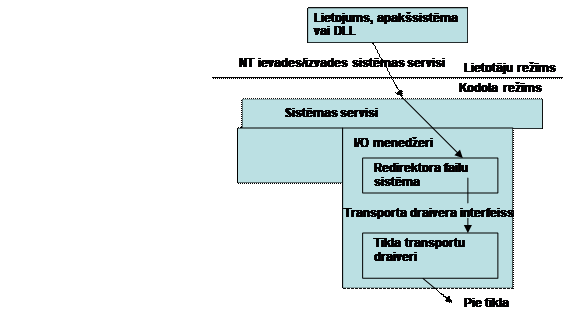
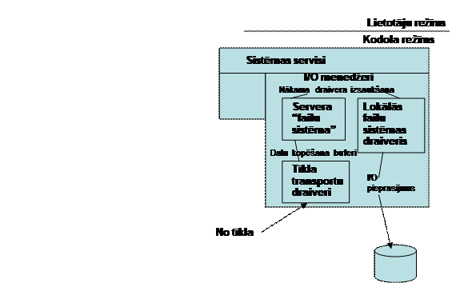
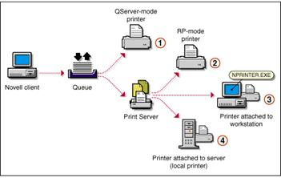
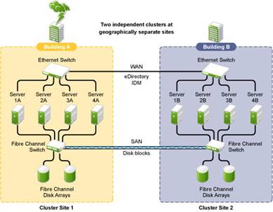
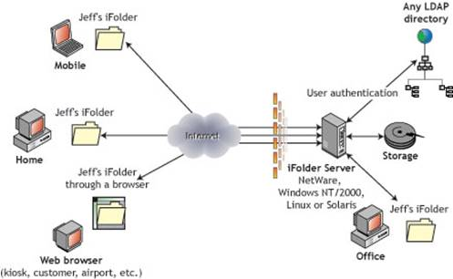
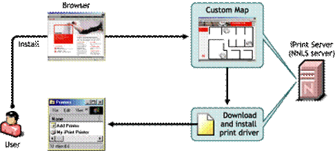
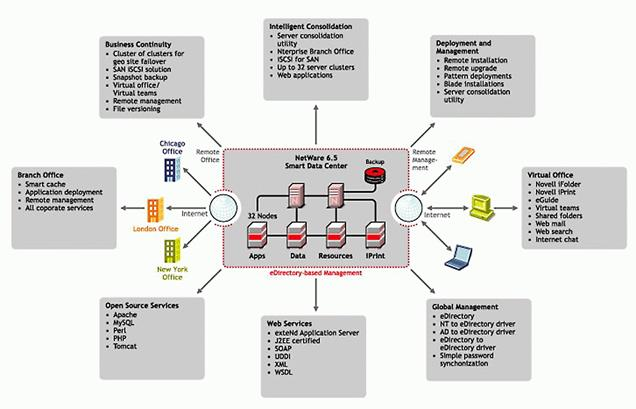
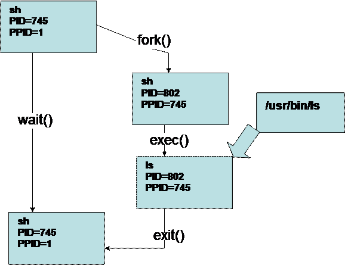

Microsoft Windows Server tīkla OS
OSI modelis un Windows NT tīkla komponenti
Tīkla
adapteru draiveru standarta interfeiss (NDIS)
Transporta draiveru interfeiss (TDI)
Serviss Darba stacija (Workstation)
Windows NT saimes operētājsistēmas tīkla rīki
Starpprocesu komunikācijas (IPC)
Interpretatora shell funkcijas
Tīklu OS īss apskats
Tīkla operētājsistēma ir tāda operētājsistēma, kas ļauj datoram tīklā apkalpot citu datoru pieprasījumus, sniedzot koplietošanas resursus, tādus kā printerus un failu sistēmas. Tātad tās uzdevums ir ātri pasniegt tīkla resursus lietotājiem un risināt konfliktus, ja tie pieprasa vienu un to pašu resursu vienlaicīgi. Par izplatītākajām tīkla operētājsistēmām var uzskatīt:
• Microsoft Windows NT paaudzes operētājsistēmas,
• NetWare operētājsistēmas,
• UNIX un Linux operētājsistēmas.
Microsoft Windows Server tīkla OS
Kopš iznākšanas 1993. gadā Microsoft Windows NT (New Technology) paaudzes operētājsistēmas ir pakāpeniski kļuvušas par pašu populārākām tīkla operētājsistēmām, aizņemot tirgū Nowell NetWare operētājsistēmu vietu. Tam par iemeslu ir ērtais grafiskais interfeiss un salīdzinoši vienkāršā ekspluatācija, kas ļauj pat nepieredzējušiem lietotājiem uzstādīt un apkalpot lokālos tīklus. Windows Server 2008 R2 un Windows Server 8 ir operētājsistēmas, kas ir vienādi ērtas visiem datoru tipiem sākot no darba stacijām līdz jaudīgiem serveriem. Windows Server OS ir ļoti laba vide lietojumiem. Tāpat, atšķirībā no Novell NetWare, Windows Server izmantoja TCP/IP kā standarta protokolu, kas arī veicināja tās popularitāti.
Novell NetWare tīkla OS
Novell NetWare bija viena no pirmajām OS, kas
paredzēta lietošanai personālo datoru lokālajos tīklos. Tā arī ir palikusi par
pašu vecāko no plaši izplatītākajām OS. 80-to gadu sākumā, kad datortīklu
galvenie uzdevumi bija tikai failu un printeru koplietošana, Novell NetWare OS
tikai izstrādāta šo uzdevumu veikšanai un to arī joprojām ļoti efektīvi
izpilda. Daudzus gadus Novell NetWare bija līderis OS tirgū un tai praktiski
nebija konkurentu. Taču kā platforma priekš Internet pielietojumiem, kas kļuva
aktuāli 90-tos gados, Novell NetWare nespēja izturēt konkurenci un tagad ir zaudējusi
lielu daļu no savām tirgus pozīcijām.
OS Novell NetWare
joprojām tiek sekmīgi ekspluatēta daudzos esošajos tīklos, bet parasti kopā ar
citām OS , tādām kā Windows NT/2000 vai UNIX. Taču NetWare ieviešanas apjoms
jaunajos tīklos ir būtiski samazinājies, neskatoties uz tādām tās stiprajām
pusēm kā ērti lietojamais katalogu serviss.
Atšķirībā no Windows NT paaudzes un UNIX operētājsistēmām, NetWare ir strikti atdalītas klienta un servera funkcijas. Tas nozīmē, ka atsevišķs dators var būt vai nu tikai kā klients vai kā serveris, bet nevar šīs funkcijas pildīt vienlaikus, kā tas ir Windows NT paaudzes un UNIX operētājsistēmās. Novell Netware 6.5 ir pēdējā Novell Netware tīkla operētājsistēmas versija.
UNIX tīkla operētājsistēmas
UNIX ir vairāklietotāju un vairākuzdevumu operētājsistēmas, kuru izstrāde bija uzsākta jau 60-tos gados un to veica Bell Labs un AT&T speciālisti.
UNIX balstītās tīkla OS ir populāras pateicoties tam, ka tās ir pārsvarā bezmaksas un atvērtā koda, kas nozīmē, ka tās ir iespējams pārveidot atbilstoši savām vajadzībām un izplatīt. Tāpat šīs OS tiek uzskatītas par ļoti drošām un stabilām, kā arī lietojamām dažādās aparatūras vidēs. UNIX balstītās OS bieži izmanto Interneta serveros stabilitātes dēļ un mazo prasību dēļ.
UNIX balstītās OS ilgu laiku netika uzskatītas par ērtām un draudzīgām, jo tām nebija, vai bija ierobežots grafiskais interfeiss. Tā vietā, tika izmantots komandrindas interfeiss. Mūsdienās UNIX un it īpaši Linux, tiek izstrādātas diezgan ērti grafiskie interfeisi, kas gan ir tikai kā palīgprogrammas un atšķirībā no citām OS, nav integrēti pašā operētajsistēmā.
OS uz UNIX platformas kā tīkla serveri ir iekarojušas labu reputāciju ar savu stabilitāti un ar iespējamību lietot dažādās aparatūras vidēs. Kā viens no pamata protokolu kompleksiem tajā tiek izmantots protokolu steks TCP/IP, tādēļ tās lieto Internetā un sadarbībai ar citu platformu OS. Jāuzsver, ka tieši UNIX-sistēmas kalpoja kā galvenā eksperimentālā vide Interneta attīstībai, kas ļāva tam kļūt par vispasaules decentralizētu pakešu komutācijas tīkl
OSI modelis un Windows NT tīkla komponenti
Tīkla
programmatūra ir neatņemama Windows NT operētājsistēmas sastāvdaļa. OS pamatā ir moduļu veida tīkla
struktūra, kas nodrošina vislielākās iespējas tīkla administrēšanai.
Lai
gan Windows NT tīkla arhitektūra pilnībā neatbilst OSI etalonmodelim, tajā
tomēr tiek izmantota slāņu struktūra, kas nodrošina moduļu maināmību, piemēram,
tīkla adapteru draiveru un protokolu gadījumos.
|
Redirektori |
Serveri |
NetBIOS |
Winsock |
||
|
Transporta draiveru interfeiss (TDI) |
|||||
|
NetBEUI |
TCP/IP |
NWLink (IPX) |
|||
|
Tīkla adapteru draiveru standarta interfeiss (NDIS) |
|||||
|
Tīkla adapteru draiveri |
|||||
Windows NT lieto divus interfeisus, lai sadalītu tīklu sadarbības pamatfunkcijas:
• Tīkla adapteru draiveru standarta interfeiss (Network Driver Interface Specification - NDIS)
• Transporta draiveru interfeiss (Transport Driver Interface - TDI)
Starp šiem interfeisiem atrodas protokolu grupas (komplekti), kas nodrošina tīkla datoriem transporta pakalpojumus (servisu):
• TCP/IP
• Net BEUI
• NWLink (IPX)
Lai gan šiem trim komplektiem ir atšķirīgas iespējas, tie ir savietojami, ja runājam par tīkla pamat servisiem. Windows NT var darboties ar jebkuru no šiem komplektiem atsevišķi vai vienlaikus. Interfeisi TDI un NDIS, kas atrodas virs/zem tiem, ļauj izvēlēties katru reizi nepieciešamo protokolu konkrēta uzdevuma veikšanai. Piemēram, ja viena no lietojumprogrammām (lietotnēm) vērsīsies pie Novel NetWare servera, tad tā izmantos NWLink (IPX).
Tīkla adapteru draiveru standarta
interfeiss (NDIS)
Tas ir standarts, ko kopīgi izstrādājušas firmas Microsoft un 3Com, un tas apraksta sadarbību starp tīkla slāņa un kanāla slāņa protokoliem, jeb – precīzāk – ar kanāla apakšslāni – vides piekļuves vadības protokolu (MAC). Windows NT sistēmā NDIS interfeiss atrodas starp tīkla adapteru draiveriem un protokola draiveriem.
Jāatzīmē, ka protokoli tiešā veidā nesadarbojas ar tīkla adapteriem, bet šim nolūkam izmanto interfeisu NDIS. Tas ļauj Windows NT sistēmai izmantot neierobežotu skaitu gan tīkla adapteru no vienas puses, gan protokolu no otras puses. Tādā veidā jebkurš protokols var sadarboties ar jebkuru adapteri.
NDIS realizācijā tiek izmantoti 2 komponenti:
• NDIS iepakotājs (NDIS wrapper – NDIS.sys)
• MAC-draiveris NDIS.
Pirmais nav piesaistīts nekādai iekārtai. Tam ir vispārējs kods, kas aptver MAC-draiverus un nodrošina protokolu-draiveru sadarbību.
NDIS MAC-draiveris katrai iekārtai ir īpašs un faktiski ir programmas kods, kas nepieciešams informācijas apmaiņai ar adapteri. Tajā ietverts to aparāt resursu izvēles mehānisms, ko iekārta lieto – tādu kā pārtraukumu pieprasījumu līnija IRQ un ievades/izvades ports. Visiem tīkla adapteriem, ko tagad uzstāda uz Windows NT 4.0 un vēlāk, jābūt NDIS-draivera 3.0 versijai, ko ražotājs piegādā kopā ar tīkla karti.
Transporta draiveru interfeiss (TDI)
Tas pilda aptuveni tās pašas funkcijas, ko NDIS iepakotājs, bet tikai tīkla steka augstākajā slānī. TDI darbojas kā interfeiss starp protokolu draiveriem un augstāk stāvošajiem komponentiem, tādiem kā serveris vai redirektors. Informācijas plūsma iet caur interfeisu uz augšu un uz leju pa tīkla steku un var tikt virzīta uz jebkuru sistēmā uzstādīto komponenti.
Virs TDI atrodas komponenti, ko lietotnes lieto, lai dažādā veidā piekļūtu tīkla resursiem, izmantojot TDI kā interfeisu.
Piemēram, komponentes, kas apstrādā ienākošo un izejošo trafiku, ir servisi Darba stacija (Workstation) un Serveris (Server). Pirmais ļauj piekļūt pie tīkla resursiem, bet otrais veic darbu sadales uzdevumus starp lokālo resursu tīkla klientiem. Šajā slānī atrodas arī lietotņu interfeisi (API -Application Program Interface), piemēram, NetBIOS un Windows Sockets, kas nepieciešami, lai nodrošinātu īpašu piekļuves režīmu atsevišķiem tīkla resursiem.
Serviss Darba stacija (Workstation)
Tas
precīzi noteic to, kur atrodas lietotnei vajadzīgais fails vai printeris
nosūtot pieprasījumu atbilstošam draiverim. Nodrošinot tādā veidā piekļuvi pie
tīkla resursiem, šis serviss (Workstation) faktiski ir uzskatāms par
Windows NT klient/servera arhitektūras klienta pusi. Šis serviss sastāv no 2
moduļiem:
- Services.exe – servisu pārvaldnieks
- Rdr.sys – Windows tīkla redirektors
Kad lietotne nosūta pieprasījumu piekļuvei failam, tas nonāk pie ievades/izvades pārvaldnieka, kas to nodod atbilstošas failu sistēmas draiverim.
Atkarībā no tā, kādas failu sistēmas tiek lietotas uz konkrētā datora, tajā var tikt instalēti FAT vai NTFS sistēmu draiveri vai arī abi vienlaikus.
Redirektoru arī var uzskatīt par failu sistēmas draiveri, taču tā vietā, lai nodotu pieprasījumu lokālajam diskam, tas sūta pieprasījumu lejup pa steku atbilstošajai tīkla resursa atrašanās vietai. Priekš ievades/izvades pārvaldnieka redirektors ne ar ko neatšķiras no citiem failu sistēmas draiveriem. Windows NT redirektors tiek uzstādīts pēc noklusēšanas, bet citām tīklu OS, piemēram, Novel NetWare, var uzstādīt papildus redirektorus.
Uz 5.1.attēla var redzēt Windows NT tīkla komponentu kopējo izskatu, to atbilstību OSI modeļa līmeņiem, kā arī protokolus, ko izmanto šie līmeņi. Var redzēt, ka OSI līmeņi neatbilst precīzi reāliem programmas moduļiem. Piemēram, transporta programmatūra bieži šķērso dažu līmeņu robežas.

Att.
5.1. Windows NT tīkla komponenti
5.2.att. parādīta tīkla ievades/izvades
klienta puses vienkāršotā skice. Lietotāja režīma programmas (piem., API I/O
Win32) izstrādā izsaukumu attālinātai I/O operācijai, izsaucot NT
ievades/izvades bāzes servisus. I/O menedžeris veido I/O pieprasījuma paketi un
pārsūta to vienam no failu sistēmas draiveriem, mūsu gadījumā Windows NT
redirektoram, kas pārsūta to zemāka līmeņa draiveriem. Tie apstrādā paketi un
pārsūta to pa tīklu. Kad pieprasījums atnāk uz datoru, kas strādā Windows NT
vadībā, to pieņem transporta draiveri.

Att.
5.2. Tīkla ievades/izvades klienta puses vienkāršotā skice
5.3.attēlā “Tīkla ievades/izvades” servera puses vienkāršotā skice” parādīta pieprasījuma uz rakstīšanu pieņemšana. Pieprasījums uz lasīšanu iziet to pašu ceļu un atgriež datus atpakaļ.

Att. 5.3. Tīkla ievades/izvades servera puses vienkāršotā skice
Tīkla API
Windows NT piedāvā lietojumam dažas iespējas pieejai tīklam: 1) I/O win32 API – standartā atvēršanas, aizvēršanas, lasīšanas, rakstīšanas utt. funkcijas; 2) tīkla API Win32 (WNet) – izmanto tādi pielietojumi kā File Manager, kas izpilda savienojumu ar attālām failu sistēmām un to apskatu; 3) dēvēto kanālu un pasts kastes Win32 API, kas nodrošina starpprocesu datu apmaiņas daudzlīmeņu interfeisu; 4) API NetBIOS – nodrošina mijiedarbību MS DOS un OS/2 programmām, kas tiek sūtīti pa tīklu; 5) API Windows Sockets – realizē standartā tīkla interfeisu, ko izmanto OS UNIX. 6) RPC – attālo procedūru izsaukšanas līdzeklis, kas ļauj veidot dalītus pielikumus. Katra API pieejas maršruts pie tīkla ir atšķirīgs. (5.4.att.)

Att.5.4.Dažādi pieejas maršruti pie tīkla
Windows NT saimes operētājsistēmas tīkla rīki
Windows NT saimes operētājsistēmās ir pieejami daudzi tīkla rīki un sīklietotnes, kas iebūvēti Windows NT saimes operētājsistēmās un piedāvā tīkla konfigurāciju, testēšanu vai lietošanu. Šiem rīkiem būtu jābūt katra Windows NT tīklu administratora zināšanu arsenālā, jo to lietošana bieži vien nodrošina ātru un precīzu tīkla problēmu diagnosticēšanu un novēršanu. Pārsvarā šie rīki izmantojami komandrindā. Lielākajai daļai no šiem rīkiem ir atbilstoši rīki arī citās tīklu operētājsistēmās (Unix, Linux, MacOS).
Ping
Viens no populārākajiem rīkiem, kas lieliski var palīdzēt tīkla problēmu konstatēšanā ir rīks “Ping”. Tas pieejams praktiski visās mūsdienu operētājsistēmās un darbojas pēc sekojoša principa:
• Ping nosūta ICMP atbildes pieprasījumu paketes (Internet Control- Message Protocol echo request) uz lietotāja norādīto IP adresi vai DNS hosta vārdu (ja to iespējams atšifrēt uz IP adresi) un gaida atbildi no mērķa datora.
• Saņemot pieprasījumu mērķa dators atbild ar automātisku ICMP atbildi.
• Saņemot mērķa datora atbildi, izsūtītāja programma aprēķina kopējā pieprasījuma izpildes laiku, pakešu zudumu un bieži vien izsūtot vairākus ping signālus - aprēķina arī mazāko, lielāko un vidējo patērēto laiku.
Ping kopš 1983.gada, kad Maiks Mūss (Mike Muuss) to uzrakstīja ir bijis viens no visbiežāk lietotajiem TCP/IP tīkla diagnosticēšanas rīkiem, taču kopš 2003.gada “ping” signālus daži interneta provaideri sākuši filtrēt un bloķēt, sakarā ar to, ka to bieži vien izmantoja vīrusi tīklu pētīšanai vai serveru tīšai noslodzei (Denial-of-Service uzbrukumos). Tādēļ mūsdienās ping ir nedaudz zaudējis savu lietderību internet vidē, bet vēl arvien ir ļoti labi lietojams lokālo TCP/IP tīklu ietvaros.
IPConfig
IPConfig (internet protocol configuration) ir Microsoft Windows kosoles rīks, kas attēlo dotā brīža TCP/IP tīkla konfigurācijas iestatījumus un atjauno DHCP (Dynamic Host Configuration Protocol) un DNS (Domain Name System) iestatījumus.
Lai apskatītu pamatiestatījums var ierakstīt komandrindā vienkārši “ipconfig”. Taču bieži vien ar to būs par maz, tādēļ, lai iegūtu visu TCP/IP konfigurāciju, jāraksta komanda “ipconfig /all”.
Lai atjaunotu DHCP konfigurāciju, lieto komandas “ipconfig /release” (izdzēst DHCP servera piešķirtās vērtības) un pēc tam “ipconfig /renew” (atjaunot DHCP konfigurāciju).
Lai atjaunotu DNS informāciju lieto komandu “ipconfig /flushdns”, savukārt lai attēlotu DNS informāciju lieto “ipconfig /displaydns”. Nepieciešamības gadījumā individuālu DNS ierakstu ievadīšanai (parasti testa vai diagnostikas nolūkos) var lietot arī komandu “ipconfig /registerdns”.
Hostname
Vienkārša komanda, kas atgriež lietotāja datora hosta nosaukumu.
Nbtstat
Ar šīs komandas palīdzību iespējams iegūt NetBT (NetBIOS over TCP/IP) protokola statistiku, NetBIOS vārdu tabulas gan lokālajam, gan attālinātajiem datoriem, kā arī apskatīt NetBIOS kešatmiņu. Nbtstat atļauj arī NetBIOS vārdu keša un WINS vārdu atjaunošanu.
Route
Komanda Route attēlo datora IP maršrutēšanas tabulu un var tikt lietota lai pievienotu vai dzēstu IP maršrutus. Dažreiz, kad tīkla konfigurācija ir pietiekoši sarežģīta, vai arī ir īpašas drošības prasības, mēdz būt problēmas saprast, kā tieši dators piekļūst pie tīkla resursiem. Vai arī maršrutēšanas tabulās var būt nepieciešamība norādīt specifiskus maršrutus dažādu resursu piekļūšanai – šādos gadījumos tiek lietota komanda “route”. Maršrutēšanas tabulu attēlošanai lieto parametru “print” ar vai bez papildus filtrēšanas parametriem. Maršrutēšanas ierakstu pievienošanai savukārt lieto parametru “add” ar maršruta mērķa, subnet maskas un nākamā lēciena adresi. Piemēram “route add 10.41.0.0 mask 255.255.0.0 10.27.0.1”
Tracert
Rīks Tracert (traceroute) bieži vien tiek lietots tīkla problēmu diagnosticēšanai. Attēlojot šķērsotos maršrutētājus, tas ļauj lietotājam uzzināt patieso ceļu, kā tiek sasniegts noteikts tīkla resurss.Šis rīks var palīdzēt atrast maršrutētāju vai ugunsmūru problēmas. Diemžēl šis rīks tiek lietots arī, lai iepazītos ar tīkla infrastruktūru vīrusos un trojas zirga tipa programmās, tādēļ tā funkctionalitāte bieži vien tiek ierobežota interneta provaideru līmenī.
Arp
Arp komanda ļauj attēlot un modificēt ARP (Address Resolution Protocol) kešatmiņu, kas satur tīkla adapteru fizisko adrešu saiknes ar IP adresēm. Kešatmiņa satur atsevišķu tabulu katram datora tīkla adapterim. Tabulas attēlo ar parametru “-a”, ierakstu pievieno ar parametru “-s”, ierakstu dzēš ar parametru “-d”.
PathPing
PathPing darbojas ļoti līdzīgi komandai “tracert”, taču sniedz papildus diagnostikas iespējas, jo norādītā laika periodā turpina testēt pakešu zudumu katrā maršrutēšanas posmā. PathPing ļauj vienkārši noskaidrot problemātiskus tīkla segmentus un ir ērts rīks tīkla problēmu diagnosticēšanā. Diemžēl, tāpat kā “ping” un “tracert”, tas cieš no ICMP pakešu filtriem, kurus izmanto daļa interneta provaideru, tādēļ to ne vienmēr var lietot jebkurai internet tīkla adresei.
Netstat
Netstat ir komandrindas programma, kas pieejama gan Windows NT, gan Unix un Linux sistēmās un sniedz statistikas datus par datora tīkla pieslēgumiem, protokoliem, maršrutēšanas tabulām un tīkla adapteru izmantojumu.
Nslookup
Nslookup ir komandrindas programma, kas ļauj sazinoties ar DNS vārdu serveri noskaidrot vārdam atbilstošo IP adresi. Šo programmu var izmantot interaktīvajā režīmā, vai individuālu vārdu noteikšanai.
Novell NetWare
tīkli
Novell NetWare ir firmas Novell izstrādātā lokālo tīklu operētājsistēmu saime. Šī tīkla operētājsistēma tika izstrādāta 1983. gadā kā slēgtā koda produkts, tādējādi tā ir atzīstama par vienu no pirmajām tīkla operētājsistēmām, kura paredzēta daudz uzdevumu darbam personālo datoru lokālajos tīklos (LAN). Šī tīkla operētājsistēmas vecākajās versijās tika izmantots komandrindas lietotāja interfeiss, kas mūsdienās vairs nav populāri, bet sākot no NetWare 5 ir pieejams uz Java bāzēts grafiskais lietotāja interfeiss.
Tā kā astoņdesmito gadu sākumā datortīklu galvenais uzdevums bija failu un printeru koplietošana NetWare bija vispiemērotākais risinājums komunikācijas nodrošināšanai un šo uzdevumu veikšanai. Drukas serveris tiek realizēts, kādai no tīkla darba stacijām pieslēdzot vairākus printerus, kuri apstrādā pieprasījumus rindas kārtībā. 5.5. attēlā tiek aplūkota standarta rindas kārtības drukas servisa konfigurācija NetWare 5.

5.5.att. Drukas servisa konfigurācija NetWare 5
Daudzus gadus Novell NetWare bija līderis operētājsistēmu tirgū un tam praktiski nebija konkurentu. Deviņdesmitajos gados aktuāliem kļūstot Interneta pakalpojumiem, Novell NetWare vairs nespēja izturēt konkurenci un tagad ir zaudējis lielu daļu no savām tirgus pozīcijām. Neskatoties uz popularitātes kritumu NetWare pastāv arī mūsdienās, taču vairākumā gadījumu šī platforma tiek ekspluatēta kopā ar citām operētājsistēmām, tādām kā WindowsNT (Windows New Technology) un Unix.
Novell NetWare tiek startēts no MS-DOS partīcijas kā programma SERVER.EXE, kas veido NetWare kodolu, kurš turpmāk ielādē norādītos autoexec.ncf draiverus un palīgprogrammas, jeb tā dēvēto VLM (Virtual Loadable Module). Novell Netware ir spējīgs ielādēt un izpildīt tikai šāda tipa moduļus līdz ar to gan lietotāja programmas, gan sistēmas programmas un draiveri tiek izpildīti vienā privilēģiju līmenī, kas ir reāls drauds visai tīkla sistēmai.
Novell NetWare tīklos ir strikti atdalītas klienta un servera funkcijas. Līdz ar to atsevišķs tīkla dators var būt vai nu tikai kā klients, vai kā serveris, bet nevar šīs funkcijas pildīt vienlaikus, kā tas ir Windows NT/2000 un UNIX gadījumos. Tātad NetWare klienti var sadarboties tikai ar NetWare serveriem, bet ne savā starpā. 5.6.attēlā parādīta vienkārša NetWare tīkla struktūra.
5.6.att.
Vienkāršota NetWare 5 tīkla struktūra
Novell NetWare produkti
Pateicoties
tehnoloģisko iespēju attīstībai NetWare ir izlaidusi vairākas versijas, no
kurām visjaunākā, stabilākā un efektīvākā ir NetWare 6.5. Plaši pazīstami arī tādi šīs saimes produkti,
kā, piemēram, operētājsistēma Personal NetWare, kas paredzēta vienādranga tīkliem
ar nelielu lietotāju skaitu un operētājsistēmas NetWare 3.x un 4.x - tīkliem ar
klientservera arhitektūru.
Turpmāk tiks sniegts neliels ieskats
jaunākajā NetWare versijā NetWare 6.5 aplūkojot būtiskākos jauninājumus un
funkcionālās iespējas.
NetWare 6.5 ir visjaunākā Novell saimes tīkla operētājsistēma, kura tika izlaista 2003. gada augustā. Izmantojot NetWare 6.5 jaunākās funkcijas, programmas, veiktspējas uzlabojumus un dažāda veida rīkus un utilītas tiek risinātas četras galvenās tīmekļa stratēģiskās jomas, kuras skar tīkla servisu administratorus, gala lietotājus un tīmekļa izstrādātājus.
Mūsdienu organizācijas ir izkliedētas dažādos ģeogrāfiskos apgabalos tādējādi radot problēmas lietotāju piekļuvei, lietojumprogrammu integrācijai, un informācijas rezervju nodrošinājumam noslogojot jau tā ierobežotos resursus. NetWare 6.5 piedāvā tehnoloģijas, lai risinātu šīs problēmas, izmantojot automatizētas konsolidācijas stratēģijas, kas samazina sarežģītību un sniedz būtisku IT izmaksu ietaupījumus izmantojot tīmekļa pārlūkprogrammas. NetWare 6.5 ietver Novell Cluster Services (NCS) – 5.7.att., kas ir drošs un izmaksu ziņā efektīvs serveru kopu risinājums, kas nodrošina praktiski nepārtrauktu piekļuvi kritiskajiem uzglabāšanas resursus. Ar atbalstu līdz pat 32 mezgliem vienā klasterī, NCS ļauj izveidot Storage Area Network (SAN) sistēmas savienotas ar šķiedru kanālu aparatūru.

5.7.att. Novell Cluster Services ar Storage Area
Network
Virtuālais birojs nodrošina lietotājiem konsekventu pieeju, kā arī pašpalīdzības un pašapkalpošanās servisa iespēju portāla vidē. Virtuālā biroja pakalpojumi, kas iekļauti NetWare 6.5 nodrošina produktīvu personīgo un komandas vidi izmantojot drukas pakalpojumus, e-pastu, tūlītējo ziņojumapmaiņu, kā arī citus komandas sadarbības instrumentus savstarpējai failu un ziņojumu apmaiņai. 5.8. attēlā sniegts virtuālā biroja piekļuves loga piemērs uzņēmuma resursiem.
- Novell iFolder
Nodrošina datu sinhronizācijas tehnoloģiju, kas lietotājam ļauj piekļūt atjauninātajai informāciju par jebkuru ierīci no jebkuras vietas. Faktiski, Novell iFolder nodrošina virtuālo, centralizētu failu glabātuvi, izmantojot internetu. IFolder failiem var piekļūt tikai pilnvarotas personas. Pieteikšanās tiek realizēta ar eDirectory ievadot attiecīgo lietotāja ID un paroli. Faili pārsūtīšanas procesa laikā tiek šifrēti, līdz ar to iFolder uztur sistēmas drošumu. 5.9.attēlā sniegta IFolder darbības shēma.
- Novell iPrint
Nodrošina drukāšanas iespēju uz jebkura Interneta printera izmantojot Internet Printing Protocol (IPP), Novell Distributed Print Services (NDPS) tehnoloģiju. Novell iPrint ļauj lietotājiem pārlūkot pieejamos printerus izmantojot tiešsaistes karti, automātiski lejupielādēt un konfigurēt atbilstošos dziņus (driver) un izmantot jebkuru printeri kā lokālo. Tiek nodrošinātas arī cita veida funkcionālās iespējas, piemēram, printera audits, kurš parāda – kurš printeris tika izmantots, kurš izmantoja konkrēto printeri un cik lapas tika izdrukātas. 5.10. attēls atspoguļo IPrint darbības shēmu.

5.9.att. Novell iFolder darbības shēma

5.10. att. Novell
iPrint darbības shēma
- Novell eGuide tika izstrādāta kā gala lietotāja rīks, kas nodrošina kontrolējamu un ātru pieeju informācijai, kas ietverta eDirectory. Novell eGuide ļauj lietotājiem atrast vārdus, adreses, faksa numurus un e-pasta adreses, kas glabājas Novell eDirectory vai citā tīmekļa datu avotā. Ar DirXML Starter Pack palīdzību lietotāji var izveidot drošu savienojumu ar dažādām lietotāju grupām un citiem darbiniekiem, lai apmainītos ar idejām un informāciju, izmantojot datu bāzes. Novell eGuid nodrošina pašapkalpošanās pakalpojumu ļaujot gala lietotājiem pārvaldīt savu personīgo sarakstu informāciju, kā arī struktūrshēmas.
- Virtual Teams ļauj lietotājiem no jebkuras vietas izveidot komandas, organizēt projektus, un dalīties ar informāciju, izmantojot ciešāku sadarbību un reālā laika mijiedarbību. Darbinieki var organizēt tikšanās, sazināties ar galvenajiem komandas biedriem neatkarīgi no to atrašanās vietas. Virtual Teams iekļauj koplietojamās mapes, interneta tērzēšanu, komandas kalendāru, komandas diskusijas, komandas izlasi un komandas publisko mājas lapu.
- Automatic file versioning aizsargā datus, ļaujot lietotājiem atrast un atjaunot failu iepriekšējās versijas. Izmantojot pārlūkprogrammas interfeisu, lietotāji var piekļūt faila rekvizītiem, tostarp atjaunojot nesenās versijas un pārvaldīt tiesības uz failiem un mapēm.
NetWare 6.5 nodrošina visaptverošu vidi, kura radīta ar mērķi uzstādīt un pārvaldīt lietojumprogrammas balstoties uz Java un Web pakalpojumu standartiem. Līdz ar to ir iespējama klienta stratēģijas īstenošana vienlaikus pilnībā izmantojot lietojumprogrammatūru sadarbspēju, samazinot izstrādes izmaksas un palielinot kopējo tīmekļa modeļa efektivitāti. Funkcionālās iespējas ietver personalizāciju, satura pārvaldību, lietotāju pārvaldību, bezvadu ierīču atbalstu, un galveno funkcionalitāti, lai izveidotu Java 2 Platform Enterprise Edition (J2EE), kas nosaka standartu izstrādājot vairāku līmeņu uzņēmuma lietojumprogrammas, kā arī tīkla servisu lietojumprogrammas.
NetWare 6.5 iespējams apvienot labākos pieejamos atvērtā koda risinājumus nodrošinot elastīgu pamatu balstoties uz tādiem atvērtajiem standartiem un tehnoloģijām kā SOAP, UDDI, Java, Perl, Apache, PHP un MySQL, tādējādi nesamazinot sistēmas pieejamību vai nepalielinot apsaimniekošanas izmaksas.
5.11. attēlā sniegts apkopojums par NetWare 6.5 vidi, funkcijām un iespējām veidojot integrēts end-to-end risinājumus.

5.11. att. Novell NetWare 6.5 apkopojošā shēma
NetWare 6.5. ir visuzticamākā pakalpojumu sniegšanas platforma, jo nodrošina drošu, nepārtrauktu piekļuvi tīklam un tā informācijas resursiem. Šī tīkla operētājsistēmas versija ir izlaista ar mērķi risināt ar tīmekli saistītos aspektus, tos aplūkojot no četrām stratēģiskajām jomām – biznesa nepārtrauktības, atvērtā koda pakalpojumiem, virtuālā biroja un tīmekļa servisu iespējām.
Operētājsistēma UNIX
Firmas Bell Laboratories zinātniski –
pētnieciskās laboratorijas līdzstrādnieks Kens Tompsons uzsāka operētājsistēmas UNIX projektēšanu 1969.
gadā. Projektētāju devīze – “jo mazāk, jo labāk”. Operētājsistēma UNIX
izveidota no samērā nelieliem moduļiem. Tās popularitāte ir saistīta ar to, ka
tā ir lēta, ātra, stabīla un izpilda gandrīz visu.
UNIX ir daudzlietotāju sistēma. tā tiek lietota kā milzīgās skaitļošanas
sistēmās, tā arī samērā nelielos datoros. UNIX sistēmā kā ierosme tiek lietota
dolāra zīme, kurai seko tukšumzīme. UNIX komandu piemēri:
$ ls – izvadīt
lietotāja failu sarakstu. (ls nozīmē List Sorted)
$ cat faila_nosaukums – izvadīt termināla ekrānā faila saturu. (cat saīsinājums no vārda concatenate).
$ who – izvadīt
aktīvo lietotāju vārdus.
$ pwd – izvadīt
tekošā kataloga nosaukumu.
Apvalks
Operētājsistēmai UNIX ir apvalks Shell, kurš pārbauda ievadīto komandu un tās argumentus un
tikai pēc tam izsauc atbilstošu programmu. Apvalku sauc arī par komandu
interpretatoru. Katrs lietotājs var izveidot sev tādu apvalku, kāds viņam
patīk.
Kodols un procesi
Rezidentu operatīvajā atmiņā UNIX daļu sauc
par kodolu. Kodolā ir tabulas, kas satur informāciju programmu saķēdēšanai
virknē. Lielākā kodola pienākumu daļa ir meklēšana tabulās un to modifikācija.
Kodols eksistē, lai apmierinātu procesu prasības. Procesa radīšana UNIXā – tas ir virtuālās mašīnas ar savu atmiņu
izveidošana. Bez tam katram procesam tiek izveidots procesa deskriptors. Tas
satur procesa identifikatoru, lietotāja, kas iedarbināja šo procesu,
identifikatoru, atmiņas adresi un ielādējamas atmiņā procesa daļas izmēru.
Deskriptoru kopa izveido procesu tabulu. Tiek
izveidota arī lietotāja tabula, kuru sauc par procesa kontekstu. Šajā tabulā
tiek ierakstīti lietotāja un grupas identifikācijas numuri, lai varētu noteikt
failu piekļūšanas privilēģijas. UNIXā procesi tiek
iedalīti sistēmas procesos un lietotāja procesos. Savukārt sistēmas procesi
tiek iedalīti vienkāršos procesos un procesos dēmonos. Dēmoni izpilda sistēmas
specifiskus pienākumus, piemēram, administrēšanu un vadību tīklos.
Izmantoto resursu uzskaite
Operētājsistēmai UNIX ir līdzekļi, kas vāc
informāciju par resursiem, kurus izmantoja katrs lietotājs. Par resursiem tiek
uzskatīts procesora laiks, atmiņas apjoms, kuru aizņem faili un laika
intervāls, kurā lietotājs tika iereģistrēts sistēmā.
Elektroniskais pasts
Daudzlietotāju datoru sistēmā lietotāji var
sadarboties cits ar citu. Lai to atvieglotu, operētājsistēmā UNIX ir paredzēts
elektroniskais pasts. Ja ziņojums tika nosūtīts lietotājam, kas tolaik nebija
iereģistrēts sistēmā, tad ziņojums tiks saglabāts. Kad nākamo reizi lietotājs
tiks iereģistrēts sistēmā, UNIX izvadīs ziņojumu “You
have mail”. Aizsūtīt
ziņojumu pa elektronisko pastu var ar komandu $ mail loginname. Pēc komandas ievades kursors tiks pārbīdīts
nākošās rindas sākumā. Šajā rindā var uzsākt ziņojuma ievadi. Ziņojuma beigās
ir jāievada faila gala pazīmē, nospiežot taustiņu kombināciju ctrl-D. Lai saņemt ziņojumus, kas ir pienākuši pa
elektronisko pastu, ir jāievada komanda $ mail.
Komanda mail bez parametru izvada ziņojumus sākot no
pēdējā ziņojuma. Komandas mail parametri:
-r
izvadīt ziņojumus sākot no pirmā ziņojuma;
-q
pārtraukt komandas mail izpildi, ja tiks
nospiests speciāls simbols;
-p
izvadīt saņemtos ziņojumus pēc kārtas, neuzdodot jautājumus par ziņojumu
likteni;
-f
file lietot kā
pasta kasti failu ar nosaukumu file.
Pēc katra ziņojuma komanda mail
izvada jautājuma zīmi, lai noskaidrotu ziņojuma tālāko likteni. Lietotāja
atbildes var būt sekojošas:
Enter – izvadīt termināla ekrānā nākošo ziņojumu;
d – iznīcināt ziņojumu;
s [file] – saglabāt
ziņojumu failā ar nosaukumu file. Ja faila nosaukums
nav uzrādīts, tad ziņojums tiks ierakstīt failā ar nosaukumu mbox, kas atrodas tekošā katalogā.
W [file] – saglabāt
ziņojumu bez virsraksta failā ar nosaukumu file. Šī
komanda nesaglabās nosūtītāja vārdu, aizsūtīšanas datumu un laiku. Ja faila
nosaukums nav uzrādīts, tad ziņojums tiks ierakstīts failā ar nosaukumu mbox.
m [person(s)] –
pārsūtīt ziņojumu lietotājiem, kuru reģistrācijas vārdi norādīti komandā;
q – pabeigt komandas mail
izpildi. Neizskatītus ziņojumus atstāt pasta kastē;
? – izvadīt palīdzību par lietotāja atbildēm,
kas norāda ziņojumu tālāko likteni.
Faili
Lietotājs var uzskatīt UNIX failu kā simbolu
(baitu) secību. Informācijas apmaiņa ar procesu un jebkuru ārējo ierīci UNIX
notiek kā ar parasto failu. Failu sistēma UNIX var tikt izvietota patstāvīgajā
vai maiņas atmiņā
Par maiņas atmiņu parasti kalpo lietotāja
mīkstais disks, kas tiek montēts pēc lietotāja reģistrācijas sistēmā un
demontēts pirms lietotāja izejas no sistēmas. Bet visos gadījumos failu sistēma
UNIX ir viena vesela būtne. UNIX dot
iespēju piekļūt pie citu lietotāju failiem un kolektīvu vairumā, kas lieto
operētājsistēmu UNIX, dominē sadarbības
gars. Bet UNIX ir paredzēts arī aizsardzības mehānisms, kas var aizsargāt
failus un katalogus no lasīšanas, izmaiņas un izpildīšanas. UNIX ir hierarhiska
failu sistēma. Katalogs tiek uzskatīts par parastu failu. Par cik katalogs ir
parasts fails, tad kataloga faili paši var būt katalogi. Saknes katalogam ir
nosaukums root. Saknes katalogā ir izveidoti
apakškatalogi. vienu no tiem sauc USR. Šīs katalogs satur visus failus, kurus
ir izveidojuši lietotāji. Kopīgas lietošanas faili atrodas kataloga root citos apakškatalogos. Vienam no tiem ir nosaukums bin. Šajā katalogā parasti tiek glabāti programmu binārie
kodi.
Tieši pēc lietotāja reģistrācijas tekošais ir
katalogs, kuru sauc par personīgo vai lietotāja katalogu. Lai sameklētu failu
ir jānorāda maršruts līdz failam no saknes kataloga vai lietotāja kataloga,
piemēram: /usr/jan/file
Slīpsvītra maršruta sākumā apzīmē saknes
katalogu, divi punkti pēc kārtas apzīmē iepriekšējo līmeni, ar punktu apzīmē
tekošo katalogu. Failu katalogi nomaināmos diskos arī tiek organizēti koka
veidā. Šo koku var pievienot vai atvienot no pamat koka, kad nomaināmā vide
tiek montēta vai demontēta. Tādā veidā lietotāja nomaināmā diska failu sistēma
tiek apvienota ar pamatsistēmu, kad lietotājs pēc reģistrācijas montē savu
disku. Diska montēšanai var lietot komandu /Sbin/mount. Piemēram:
$ /Sbin/mount /dev/dsk/f1t /b (jāmontē mīksto disku f1t katalogā /b)
Komanda
/Sbin/mount bez parametru tiek lietota, lai izvadītu
informāciju par montētām failu sistēmām. Šī komanda izvada kataloga nosaukumu,
kurā tika montēta failu sistēma, ierīces nosaukumu /dev, kurā tā atrodas,
datumu un laiku, kad failu sistēma tika montēta. piemēram, pēc komandas $/Sbin/mount tiks izvadīts: /b on /dev/ dsk/f1t on Wed Dec 14 16:23:52
2008
Lai
demontētu failu sistēmu, tiek lietota komanda /Sbin/umount, piemēram: $ /Sbin/unmount /dev/dsk/f1t
Pēc demontēšanas diska failu sistēmas faili un
katalogi nav pieejami.
Kataloga iekšējā struktūra
Katram failam un apakškatalogam tiek izveidota
sekojoša struktūra:
struct {
int inode; /* indsksdeskriptora
numurs */
char name; /* faila nosaukums */
}
Indeksdeskriptors satur informāciju par faila garumu, izvietojumu diskā, aizsardzības
kodu, izveidošanas datumu, laiku un tipu (katalogs, parasts vai speciāls
fails). Ja faila garums ir lielāks par viena bloka garumu, kas ir vienāds ar
1024 baitiem, tad fails aizņem vairākus blokus. Bloku numuru saraksts, kas
atspoguļo faila izvietojumu diskā, aizņem indeskdeskriptora
lielāko daļu. Indeksdeskriptora garums ir 64 baiti.
Bloku numuru sarakstā ir 13 numuri. pirmie 10 numuri norāda faila pirmos 10
blokus. Ja fails ir īsāks par 10 blokiem, tad tikai daži saraksta numuri norāda
blokus, kuros ir izvietots fails. Pārējo saraksta numuru vērtības ir vienādas
ar nulli. Ja fails ir garāks par 10 blokiem, tad pirmie 10 numuri norāda faila
pirmos 10 blokus, bet vienpadsmitais norāda uz bloku, kurā tiek izvietots
nākošo 256 bloku numuru saraksts. Šo bloku sauc par pirmā līmeņa netiešo bloku.
Bet jā failu nav iespējams izvietot pat 266 blokos, tad divpadsmitais bloks
norāda uz otrā līmeņa netiešo bloku, kura katrs elements norāda uz pirmā līmeņa
netiešo bloku.
Līdzīgi trīspadsmitais bloks norāda uz trešā
līmeņa netiešo bloku. Tādejādi, maksimālais faila izmērs UNIS ir (10 + 256 +
2562 + 2563) * 1024 » 17 247 000 000 baitu. Kad fails tiek atvērts, faila indeksdeskriptors tiek glabāts operatīvajā atmiņā. Ideksdeskriptoru lietošana ļāva panākt faila nosaukuma
neatkarību no pārējiem datiem. Tas dot iespēju izmainīt katalogu struktūru
nepārbīdot failus un izveidot atsauces uz vienu un to pašu failu dažādos
katalogos. Katra atsauce uz faila indeksdeskriptoru
tiek fiksēta speciālajā zonā. Ja faila izslēgšanas rezultātā no katalogiem tiek
likvidēta pēdējā atsauce uz failu, tad faila indeskdeskriptors
tiek iznīcināts, bet atmiņa, ko aizņēma šīs fails diskā, tiek atbrīvota. UNIX
failu sistēmai S5FS ir viens būtisks trūkums: nejauša barošanas atslēgšana var
novest pie nevēlamām sekām: dažu bloku pazaudēšanas, katalogu un indeksdeskriptoru izkropļošanas.
Speciālie faili
Ievērojama operētājsistēmas UNIX īpatnība ir
ievades – izvades sistēma, kurā visas ārejās ierīces
tiek uzskatītas par failiem. Katrai ierīcei atbilst vismaz viens speciāls fails.
Lielākā speciālo failu daļa atrodās katalogā
/dev: Ja ievadīt:
$ cd /dev
$ ls –l
dators izvadīs speciālo failu nosaukumus:
console – vadības pults; dsk - kataloga dev apakškatalogs ar disku speciālo
failu nosaukumiem; lp - iespiedierīce; lp0 - paralēla
pieslēgvieta 0; lp1- paralēla pieslēgvieta 1; ... ; rtm
- magnētiskā lente; trm - kataloga dev apakškatalogs
ar terminālu nosaukumiem.
Sistēma konstatē starpību starp parasto un
speciālo failu tikai pēc indeksdeskriptora analīzes.
Speciālā faila indeksdeskriptorā
ir informācija par ierīces klasi, tipu un kārtas numuru. Speciālie faili tiek
iedalīti divās klasēs: baitorientēti faili un bloka orientēti faili. Speciālā
faila garuma zonā tiek izvietoti divi skaitļi. Pirmais no tiem nosaka ierīces
tipu, otrais – ierīces kārtas numuru. Specialo failu ievešana ļāva unificēt ievades – izvades operācijas.
Failu
aizsardzība
UNIX katram failam ir īpašnieks. Kad fails
tiek izveidots, īpašnieka reģistrācijas vārds tiek ierakstīts faila indeksdeskriptora aizsardzības zonā. Ja kāds cits lietotājs
kopē failu, tad viņš kļūst par kopijas īpašnieku. Lai vienkāršotu pieejas
tiesību sadalīšanu, lietotāji var izveidot grupas. Grupas sastāvu nosaka
administrators. Dažiem lietotājiem var piešķirt atsevišķus reģistrācijas vārdus
darbam dažādās nozarēs. Tas atvieglo nozares nodošanu citam lietotājam. Tam ir
jāpaziņo tikai lietotāja vārds un parole.
Katru sistēmas UNIX failu var apgādāt ar
aizsardzības atribūtiem. Eksistē triju veidu aizsardzības atribūti:
- lasāms
- rakstāms (izmaināms)
- izpildāms.
Šos atribūtu veidus var pielietot trijām
lietotāju klasēm:
- Īpašniekiem
- īpašnieka grupas locekļiem
- pārējiem lietotājiem.
Sakarā ar to, ka eksistē trīs lietotāju klases
un triju veidu aizsardzības atribūti, ar katru failu ir saistīti deviņi neatkarīgi
pilnvaru atribūti, kuri veido aizsardzības kodu:
000 400 – lasīt īpašniekam
000 200 – rakstīt īpašniekam
000 100 – izpildīt īpašniekam
000 040 – lasīt īpašnieka grupas locekļiem
000 020 – rakstīt īpašnieka grupas locekļiem
000 010 – izpildīt īpašnieka grupas locekļiem
000 004 – lasīt pārējiem lietotājiem
000 002 – rakstīt pārējiem lietotājiem
000 001 – izpildīt pārējiem lietotājiem
Sakarā ar to, ka katalogs tiek uzskatīts par
parastu failu, ar katalogiem arī ir saistīti pilnvaru atribūti. Tiek uzskatīts,
ka katalogs tiek izpildīts, kad tas tiek lietots faila meklēšanai. Atļauja
rakstīt katalogā ļauj papildināt katalogu ar jauniem failiem un iznīcināt
katalogā pat tādus failus, kur nav pilnvaru rakstīt. Kataloga aizsardzības
atribūti var nesakrist ar failu aizsardzības atribūtiem.
Faila izveidošanas laikā aizsardzības sākuma
atribūtus nosaka sistēma UNIX. Parasti šie atribūti ļauj faila īpašniekiem
lasīt un rakstīt, bet visiem pārējiem lietotājiem tikai lasīt. Faila īpašnieks
var pēc savas gribas izmainīt aizsardzības atribūtus. Sakarā ar to, ka kataloga
īpašnieks var aizliegt visiem pārējiem lietotājiem lasīt personīgos katalogus,
katrs lietotājs redz tikai kataloga koka daļu.
Aizsardzības atribūtu uzdošana
Aizsardzības atribūtu uzdošanai kalpo komanda chmod. Aizsardzības atribūtus var uzdot ar oktāliem skaitļiem vai ar simbolu virknēm, piemēram
komandas
$ chmod 666 file vai $ chmod a = rw – x file
atļauj visiem lietotājiem failu ar nosaukumu file lasīt un rakstīt, bet neļauj to izpildīt.
Lai aprēķinātu oktālo
skaitli, ir jāsaskaita kopā lasīšanas – 4, rakstīšanas – 2 un izpildīšanas – 1
pilnvaras īpašniekiem, īpašnieka grupas locekļiem un pārējiem lietotājiem. Lai
uzdotu aizsardzības atribūtus ar simbolu virknēm, komandu chmod
pieraksta veidā:
$ chmod kam
kods pilnvara file,
kur parametru kam var aizvietot ar:
u – īpašnieks
g – īpašnieka grupas locekļi
o – pārēji lietotāji
a – visi lietotāji (īpašnieki, īpašnieka
grupas locekļi un pārējie lietotāji)
parametru kods var aizvietot ar: + atļaut
pieeju; - aizliegt pieeju;
= piešķirt vērtību.
Parametru pilnvara var aizvietot ar: r –
atļaut lasīt; w – atļaut rakstīt;
x – atļaut izpildīt.
Piemēri:
$ chmod a+x file atļauj visiem lietotājiem izpildīt failu ar
nosaukumu file
$ chmod a=rwx test atļauj
visiem lietotājiem lasīt, rakstīt un izpildīt failu test.
Kopīgo resursu lietošana
Kopīgo resursu pieprasījumi tiek glabāti
speciālā failā. Atsevišķs fona process izpilda tos rindas kārtībā. Šo metodi
sauc par spulingu (no angļu “SPOOL” – Simultaneous peripheral Operation on Line). Piemēram, spulingu lieto, lai izvadītu datus iespiedierīcē vai
apstrādātu elektroniskā pasta ziņojumus.
Failu nosaukumu šabloni
Failu nosaukumu šablonus lieto vairāku failu
apzīmēšanai un failu nosaukuma pieraksta saīsināšanai. Sistēmā UNIX var lietot
sekojošus šablonus:
*
atbilst jebkuru simbolu rindai ietverot tukšu rindu
?
atbilst jebkuram simbolam
[abc] atbilst vai a, vai b, vai c
-
atbilst intervālam no – līdz
Piemēri:
$ ls *.c izvada visus failus ar paplašinājumu
“c”
$ ls b* izvada visos failus, kuru nosaukumi
sākās ar burtu “b”
$ ls ??.c izvada visus failus ar paplašinājumu
“c”, kuru nosaukumi satur divus burtus
$ ls pic[0 – 9] izvada
visus failus, kuru nosaukumi satur burtus pic un
jebkuru ciparu
Ja ir nepieciešams aplūkotos simbolus uzskatīt
par parastiem simboliem, tad šos simbolus ir jāietver dubultpēdiņās (dažās
versijās apostrofos) vai pirms aplūkotā simbola ir jālieto apgrieztā
slīpsvītra. Apgriezta slīpsvītra ir jāattēlo ar divām slīpsvītrām. Piemēri:
$ rm * tiks iznīcināti visi faili
$ rm “*” tiks iznīcināts tikai fails ar nosaukumu *.
Izvades plūsmas pāradresēšana
Sistēmā UNIX jebkuras komandas rezultātus,
paredzētus izvadei standarta failā, ar simbolu > var pāradresēt citai
ierīcei vai ierakstīt failā. Piemēram, ar komandu $ who
> userlist
lietotāju sarakstu var ierakstīt failā ar
nosaukumu userlist, kas atrodas tekošajā katalogā.
Šajā gadījumā lietotāju saraksts netiks izvadīts termināla ekrānā. Lai izvadītu
to termināla ekrānā, var lietot komandu $ cat userlist.
Ievades plūsmas pāradresēšana
Līdzīgi tam, kā izvades datus var ierakstīt
failā, ievades datus var nolasīt no faila. Ievades plūsmas pāradresēšanai lieto
simbolu < pirms tā faila nosaukuma, no kura tiks nolasīti dati. Ievades
plūsmu var pāradresēt tikai tām komandām, kuras saņem datus no ievades
standarta failiem. Piemēram, lai saskaitītu rindu skaitu failā userlist, var lietot komandu WC ar parametru l (Lines):
$ WC – l userlist
3 userlist
Šo piemēru var pierakstīt citādi, lietojot
ievades plūsmas pāradresēšanu:
$ WC – l < userlist
3
Otrā gadījumā komanda WC nezina, no kurienes
tiek saņemti dati, jo pāradresēšanu izpilda komandu interpretators Shell.
Ievades un izvades plūsmu pāradresēšana
Komandas ievades un izvades plūsmas var
pāradresēt, ja komanda saņem datus no ieejas standarta faila un izvada datus
izejas standarta failā, piemēram:
$ cat userlist
root console oct 6
16:40
inter pts000 oct 6
16:41
infor pts002 oct 6 17:10
$ sort < userlist > sort_userlist
$ cat sort_userlist
infor pts002 oct 6
17:10
inter pts000 oct 6
16:41
root console oct 6
16:40
Konveijeri
Parasti konveijers tiek izveidots no dažām
programmām, kurā vienas programmas standarta izeja ir otras programmas
standarta ieeja. Šī metode dot iespēju sarežģītu programmu aizvietot ar
vienkāršiem moduļiem, katrs no kuriem izpilda atsevišķu uzdevumu. Pēc tam
lietotājs var apvienot šos moduļus konveijerā, lai izpildītu nepieciešamo
funkciju. Konveijers tiek apzīmēts ar vertikālo svītru, piemēram:
Comand1 arg...ôComand2 arg... ôComand3 arg...
Sistēmā UNIX dažas programmas tiek speciāli
izveidotas darbam konveijeros. Tādas programmas tiek sauktas par filtriem. Ja ir
nepieciešams pārķert kādas konveijera komandas rezultātus un ierakstīt tos
failā, var lietot komandu tee (tee
file).
Komanda tee parasti
tiek lietota starp konveijera komandām, bet to var arī lietot konveijera
beigās, lai ierakstītu konveijera rezultātus failā un vienlaicīgi aplūkotu tos
termināla ekrānā.
Komanda cat
Komandu cat var
lietot, lai apvienotu daudz failus kopā, piemēram, komanda: $ cat file1 file2 kopē abus failus un izvada tos
termināla ekrānā. Komanda cat bez parametru ievada
rindas no standarta faila (tastatūras) un izvada tās termināla ekrānā pēc
taustiņu kombinācijas ctrl/d nospiešanas. Taustiņu
kombinācija ctrl/d nozīmē faila galu.
Piemērs:
$ cat
THANK YOU
ctrl/d
THANK YOU
$
Ar simbolu > komandas cat
izvadu var pāradresēt failā.
Katalogu izveidošana
Katalogu izveidošanai tiek lietota komanda mkdir. Komandas mkdir izpildes
laikā jaunā katalogā automātiski tiek ierakstīti divi elementi ar nosaukumiem
“.” un “..”. Punkts norāda uz izveidotu katalogu, divi punkti norāda uz to
katalogu, kuram ir pakļauts izveidotais katalogs. Atsauci uz katalogu un failu
var izveidot ar komandu ln, piemēram, komanda:
$ ln /home/inter/data usr/desktop/data
izveido atsauci uz failu data
katalogā /usr/desktop. Kad tiek izvadīts kataloga satura rādītājs, atsauces
tiek atzīmētas ar bultām ->.
Failu pārsūtīšana un kopēšana
Komanda
$ mv /mtdir/prog1.c /thdir/prog1.c
iznīcina atsauci uz failu prog1.c katalogā mtdir un izveido jaunu atsauci uz failu prog1.c katalogā thdir, nepārbīdot pašu failu.
Dati tiek pārbīdīti tikai tajā gadījumā, kad
datu vides ir dažādas.
Ar
komandu mv var izmainīt arī kataloga nosaukumu, ja datu avots un datu saņēmējs
ir pakļauti vienam un tam pat katalogam, piem.:
$ mv mydir newdir
Komanda cp kopē
failus un atšķīrās no iepriekšējās komandas mv ar to, ka komanda cp saglabā avota failu, bet komanda mv iznīcina to.
Komandu izpilde fona režīmā
Ja kādas komandas izpilde prasa daudz laika un
tā neievada datus no termināla, tad šo komandu lietderīgi izpildīt fona režīmā.
Lai izpildītu komandu fona režīmā, komandas beigās ir jāpieraksta simbolu
“&” – ampersands. Ja komanda tiek izpildīta fona
režīmā, tad komandas izejas standarta fails ir saistīts ar terminālu, bet
ieejas standarta fails nav saistīts ar terminālu.
Bet jā komanda tomēr mēģinās ievadīt datus no
termināla, tad tas būs ekvivalents taustiņu kombinācijas ctrl-d
(faila gala pazīme) nospiešanai. Iznīcināt iedarbinātu procesu var ar komandu kill, piemēram:
$ kill 1433
Lai izvadītu informāciju par visiem
iedarbinātiem procesiem, var lietot komandu ps. Ja
komanda ps tiktu ievadīta pirms procesa ar numuru
1433 iznīcināšanas, termināla ekrānā tiktu attēlota apmēram tāda informācija:
PID
TTY TIME COMAND
6005
tty11 10:06 sh
1433
tty11 10:10 “iedarbināta procesa nosaukums”
Process ar numuru 6005 ir komandu
interpretators – programma sh, kura atšifrē visas
ievadītās komandas.
OS UNIX procesi
Procesiem pieder galvenā loma OS UNIX, jo no
procesu vadības apakšsistēmas funkcionēšanas ir atkarīga OS veiktspēja.
Programmas un procesi
Par programmu sauc statisko failu kopumu. Lai
palaistu programmu uz izpildīšanu, OS no sākuma izveido izpildīšanas vidi
(apkārtni), kurai pieder atmiņas resursi, pieejas iespējas ievades/izvades
iekārtām un citiem sistēmas resursiem, ieskaitot arī kodola servisus. Šo
izpildīšanas vidi sauc par procesu.
Viena programma var izveidot vairāk nekā vienu
procesu. Vienkāršas komandas (piem., cat vai who) izpildīšanas laikā ir pārstāvētas ar vienu procesu.
Sarežģīti uzdevumi, piem., sistēmas servisi (drukas, FTP, Telnet),
izveido vairākus vienlaicīgi izpildāmus procesus. Sava izpildes gaitā process
seko savai instrukciju kopai un pārēja cita procesa
instrukciju kopai nenotiek. Process nolasa un ieraksta informāciju sava datu
nodaļā un stekā, bet viņam nav pieejami citu procesu dati un steki.
Tajā pašā laikā procesi var apmainīties ar
informāciju, izmantojot OS UNIX starpprocesu komunikācijas līdzekļus (IPC – Inter Process Communication),
tādus kā signāli (signals), kanāli (pipes), koplietojamā atmiņa (shared
memory), semafori (semaphores),
ziņojumi (messages) un faili.
Procesu tipi (veidi)
1.Sistēmas procesi
– ir kodola daļa un tie vienmēr atrodas operatīvā atmiņā. Sistēmas procesiem
nav atbilstošu programmu izpildāmo failu veidā un tie tiek palaisti specifiskā
veidā – sistēmas kodola inicializēšanas gaitā. Šo procesu instrukcijas un dati
atrodas sistēmas kodolā, tātad tie var izsaukt funkcijas un griezties pie
datiem, kas nav pieejami citiem procesiem. Pie tādiem procesiem pieder shed (svopinga dispečers), vhand (lappušu aizvietošanas dispečers), bdfflush (bufera ķeša dispečers, kmadaemon
(kodola atmiņas dispečers). Pie sistēmas procesiem pieder arī init, kas ir visu procesu cilctēvs.
Process init nav kodola daļa un to
palaišana notiek no izpīdama faila /etc/init, bet šā procesa darbība
ir ļoti svarīga visas sistēmas funkcionēšanai.
2.Dēmoni – ir
neinteraktīvi procesi, kurus palaiž parastā veidā, t.i. ielādējot atmiņā
atbilstošu izpildāmu failu. Procesi-dēmoni tiek izpildīti fona režīmā. Parasti
dēmoni tiek palaisti sistēmas inicializēšanas gaitā (bet pēc kodola
inicializēšanas) un nodrošina dažādu UNIX apakšsistēmu darbību: terminālu
pieejas sistēma, drukas sistēma, tīkla pieejas un tīkla servisu sistēmas
utt. Dēmoni nav saistīti ne ar kāda
lietotāja darba seansi un lietotājs nevar pārvaldīt dēmona darbu. Dēmoni
lielāko laika daļu gaida, kamēr kāds no procesiem nepieprasīs noteikto servisu,
piem., dokumenta izdruku vai pieeju failu arhīvam.
3.Lietīšķie procesi ir visi pārējie procesi, kas tiek izpildīti sistēmā. Pārsvarā tās ir
procesi, kas bija radīti lietotāja darba seansā. Piem., komanda ls() radīs atbilstošu lietišķu procesu.
Svarīgāks lietišķs process ir bāzes komandu
interpretators (login shell),
kas nodrošina lietotāja darbu OS UNIX. Šis process tiek palaists uzreiz pēc
lietotāja reģistrēšanas sistēmā un darba beigās
login shell nodrošina lietotāja atslēgšanu no
sistēmas.
Lietišķie procesi var izpildīties kā
interaktīvā, tā arī fona režīmā, bet vienalga šo procesu dzīves periods tiek
ierobežots ar lietotāja darba seansa laiku. Pēc izejas no sistēmas visi
lietotāja lietišķi procesi būs iznicināti.
Procesa atribūti
OS pārvalda procesus izmantojot procesu
atribūtus, svarīgākie no kuriem ir:
1.PID (Process ID) – procesa identifikators ir
unikāls, nodrošina procesa atpazīšanu. Katram jaunizveidotam
procesam kodols piešķir nākamo brīvu identifikatoru (augošā kārtībā). Kad tiek
izmantota identifikatoru numuru maksimāla vērtība, nākamais process saņems
minimālo brīva identifikatora vērtību un cikls atkārtojas. Pēc procesa
pabeigšanas kodols atbrīvo procesa identifikatoru un pievieno to brīvu
identifikatoru sarakstam.
2.PPID (Parent
Process ID) – “vecāku” procesa identifikators, ko process manto no tā procesa,
kas viņu radīja.
3.NI (Nice Number) – tas ir procesa relatīvā prioritāte, ko izmanto
sistēmas plānotājs, kad nosaka procesu palaišanas kārtību. Procesoru resursu
faktisku iedalīšanu nosaka procesu izpildīšanas prioritāte, kas savukārt ir
atkarīga no relatīvas prioritātes. NI nemainās procesa dzīves gaitā (kaut gan
administrators vai lietotājs var to mainīt), bet izpildīšanas prioritāte
dinamiski tiek atjaunota ar kodola palīdzību.
4.TTY – termināls vai pseidotermināls,
kas ir asociēts ar procesu. Procesiem-dēmoniem nav asociētu terminālu.
5.RID un EUID – reāls un efektīvs lietotāja
identifikatori. Procesa RID ir lietotāja, kas palaida procesu, identifikators.
EUID tiek izmantots lai noteiktu procesa pieejas tiesības sistēmas resursiem.
Parasti RID un EUID sakrīt, kaut gan ir iespēja piešķirt procesam plašākas pieejas
nekā lietotājam (piem., administratora tiesības).
6.RGID un EGID – reāls un efektīvs grupas
identifikatori. Procesa RGID ir vienāds ar lietotāja, kas palaida procesu,
primāras vai tekošas grupas identifikatoru. EGID tiek izmantots lai noteiktu
procesa pieejas tiesības sistēmas resursiem pēc grupas tiesībām.
Komanda $ ps [opt] ļauj saņemt informāciju par iedarbinātiem procesiem.
Procesa dzīves gaita
Katrs process OS UNIX tiek radīts ar sistēmas
izsaukumu fork (). Procesu, kurš izpildīja šo
izsaukumu, sauc par procesu-”tēvu”, bet jaunizveidoto
procesu – par procesu-”dēlu” un viņš ir “tēva” procesa pilnīgi identiskā
kopija: tādās pašas instrukcijas, dati un abu procesu izpildīšana sāksies no
vienas un tas pašas instrukcijas, kas seko sistēmas izsaukumam fork (). Vienīga procesu atšķirība – procesu identifikatori
PID. Katram procesam ir viens process-”tēvs”, bet var būt vaorāki
procesi-”dēli”.
Lai palaistu uzdevumu, t.i. ielādēt jaunu
programmu, procesam vajag izpildīt sistēmas izsaukumu exec().
Šajā gadījumā jauns process netiek radīts, bet procesa izpildāmais kods pilnīgi
tiek aizvietots ar palaižamas programmas kodu. Jaunas programmas vide daļēji
saglabājas, piem., vides mainīgu vērtības, standarta ievades un izvades plūsmu
noteikšana, procesa prioritāte.
OS UNIX jaunas programmas palaišana uz
izpildīšanu bieži ir saistīta ar jaunu procesu radīšanu. Tātad, no sakuma
process izpilda izsaukumu fork(), tiek radīts jauns
process-”dēls”, kurš pēc tam izpilda izsaukumu exec()
un pilnīgi tiek aizvietots ar jaunu programmu. Tādu jaunas programmas
palaišanas procedūru sauc par fork-and-exec. (Sk.
Zīm.)
[Lietotājs, strādājot komandu režīmā (kom. Int. Shell) palaiž komandu ls. Tekošs process shell izpilda
izsaukumu fork(), tiek radīta shell
otra kopija. Jaunizveidotais shell
izpilda izsaukumu exec(), kurā kā parametrs tiek
uzradīts izpildāma faila vārds, kuru vajag ievietot atmiņā koda shell vietā. Kods ls() aizvieto jaunizveidota shell l kodu un
utilīta ls() sāk izpildīties. Pēc ls()
darba pabeigšanas izveidotais process “nomira”. Lietotājs atkal atgriežas
komandu režīmā. ]
 Procesa radīšana un programmas palaišana
Starpprocesu komunikācijas (IPC)
vienkāršs veids ir signāli, kas
ļauj sūtīt no viena procesa (vai no kodola) citam procesam ziņojumu par kāda
notikuma rašanu. Signāli visvairāk atgādina programmas pārtraukumus, t.i.
līdzekļus, ar kuru palīdzību var pārtraukt procesa izpildīšanu. Piem., 1) ja
process iniciē dalīšanas ar nulli operāciju, tad kodols izstrādā signālu
SIGFPE; 2) ja ir nospiesti pārtraukuma taustiņi (<del>
vai <Ctrl+C>), tad tekošam procesam tiek sūtīts
signāls SIGINT. Signālu sūtīšanai izmanto komandu kill().
$ kill sig_no pid, kur sig_no ir signāla simbolisks vārds vai numurs un pid ir procesa, kuram ir sūtīts signāls, identifikators.
(Komanda $ kill –l izvadīs signālu vārdus un ciparu
kodus.)
Sistēmas administrators var sūtīt signālus
jebkuriem procesiem, bet lietotājs – tikai procesiem, kuriem viņš ir īpašnieks,
t.i. procesa RID un EUID sakrīt ar lietotāja identifikatoru.
Saņemot signālu procesam ir trīs tālākas
rīcības varianti:
1.Process var ignorēt signālu. (Nevajag ignorēt
signālus, ko izraisa aparatūra, jo rezultāts nav pareģojams.)
2. Process var pieprasīt darbības pēc
noklusējuma. Pārsvarā tas ved pie procesa pabeigšanas.
3. Process var pārķert signālu un apstrādāt to
patstāvīgi. Pie., signāla SIGINT pārķeršana ļauj procesam iznicināt pagaidāmus
failus, kurus viņš izveidoja.
Komanda kill() pēc
noklusējuma sūta signālu ar numuru 15 (SIGTERM), kura
darbība pēc noklusējuma ir pabeigt procesu, kas saņēma to.
Dažreiz process turpina eksistēt pēc signāla
SIGTERM. Šajos gadījumos var sūtīt procesam signālu SIGKILL (kods 9), kuru
nevar ignorēt vai pārķert.
Un tomēr var būt situācijas, kad process
nepazūd arī pēc signāla SIGKILL. Tas varētu būt sekojošiem procesiem:
1.Procesi-zombi. Faktiski procesa nav, ir
tikai ieraksts sistēmas procesu tabulā. Tādu procesu-zombi
var iznīcināt tikai palaižot no jauna OS.
2.Procesi, kas gaida nepieejamus dotajā brīdī
NFS resursus. Piem.,
process raksta datus attālināta datora failu
sistēmas failā, bet dators ir atslēgts no tīkla. Šo situāciju var pārvarēt,
nosūtot procesam signālu SIGINT vai SIGQUIT.
3. Procesi, kas gaida operācijas ar iekārtu
pabeigšanu, piem., magn. lentes pārtīšanu. Signālus
izmanto ne tikai procesu pabeigšanai. Piem., sistēmas dēmoniem ir specifiski
signāli, kas izsauc kādu noteiktu darbību: datu bāzes nolasīšana no diska utt.
Pie IPC līdzekļiem bez signāliem vēl pieder
kanāli, FIFO vai dēvētie kanāli, ziņojumi vai ziņojumu rindas, semafori, dalītā
atmiņa un soketi. (Ziņojumus, semaforus un dalītu
atmiņu sauc par System V IPC.
Signālu, kā IPC līdzekļa, izmantošana ir
ierobežota, jo signāli prasa daudz sistēmas resursu. Kanālus nevar izmantot kā
IPC līdzekļi starp neatkarīgiem procesiem. Raksturosim citus mehānismus.
FIFO kanāli
, tapāt kā vienkārši kanāli, nodrošina vienvirziena
datu pārraidi, bet šiem kanāliem ir vārdi, kas ļauj neatkarīgiem procesiem
iegūt pieeju šiem objektiem. FIFO izveidošanai izmanto sistēmas izsaukumu mknod():
int mknod(char *pathname, int mode, int dev);
kur
pathname ir FIFO faila vārds failu sistēmā, mode ir
pieejas tiesības un dev tiek ignorēts, kad veido FIFO.
FIFO var izveidot arī no shell
komandu rindas: $ mknod name
p
Pēc FIFO izveidošanas to var atvērt
rakstīšanai un lasīšanai, ko var izpildīt neatkarīgi procesi. FIFO kanāli
strādā pēc noteikumiem:
•
Ja nolasa mazāku baitu skaitu nekā
ir FIFO kanālā, atgriež pieprasītu baitu skaitu, pārējie paliek tālajai
nolasīšanai.
•
Ja nolasa lielāku baitu skaitu
nekā ir FIFO kanālā, atgriež pieejamu baitu skaitu. Process, kas lasa, organizē
atbilstošas situācijas apstrādi.
•
Ja kanāls ir tukšs un neviens no
procesiem neatvēra to rakstīšanai, tad nolasīšana no kanāla dos 0 baitu. Ja
viens vai vairāki procesi atvēra kanālu rakstīšanai, tad izsaukums read() tiek bloķēts līdz datu parādīšanās kanālā (ja nav
uzlikts karogs “bloķēšanas prombūtne” O_NDELAY).
•
Ja FIFO kanālā raksta mazāku baitu
skaitu nekā ir tā ietilpība, tad ir garantēts, ka dati no dažādiem procesiem
nebūs sajaukti.
•
Ja FIFO kanālā raksta lielāku
baitu skaitu nekā ir tā ietilpība, tad izsaukums write()
tiek bloķēts līdz vajadzīgas vietas atbrīvošanai, bet nav garantēts ka dati no
dažādiem procesiem nebūs sajaukti. Ja process mēģina rakstīt kanālā, kas nav ne
ar vienu procesu nav atvērts lasīšanai, tad šim procesam ir garantēts signāls
SIGPIPE, bet izsaukums write() atgriež 0 kopā ar
kļūdas uzstādīšanu (errno=EPIPE).
1.Piemērs demonstrē klientservera pielikumu ar
FIFO izmantošanu datu apmaiņai.
Pārējie IPC līdzekļi ir sarežģītāki par
iepriekšējiem un prasa papildus vienošanās IPC identifikatoros un vārdos.
Konkrēta IPC veida iespējamo vardu kopu sauc par
vārdu apgabalu (name space).
Ziņojumu, semaforu un dalītās atmiņas vārdus sauc par atslēgām (key) un tas ģenerē ar funkciju ftok()
no diviem komponentiem – faila vārds un projekta identifikators:
# include <sys/types.h>
# include <sys/ipc.h>
key_t ftok(char *filename, char proj);
Kā faila vārdu var izmantot faila vārdu, kurš
ir zināms procesiem, kas sadarbojas. Vārdu apgabals ļauj neradnieciskiem
procesiem veidot un kopīgi izmantot IPC, bet norādēm uz izveidotiem objektiem
izmanto identifikatorus, tapāt kā failu operācijās izmanto failu deskriptorus,
kaut faili bija atvēri pēc vārda. Katram IPC ir savs unikāls deskriptors, ko OS
izmanto darbam ar šo objektu.
Darbs ar System V
IPC objektiem ir līdzīgs. Lai izveidotu objektu un iegūtu pieeju tam izmanto
sistēmas izsaukumus get: msgget()
– ziņojumu rindai, semget() – semaforam, shmget() – dalītai atmiņai. Visi veiksmīgi izsaukumi
atgriež objekta deskriptoru, bet neveiksmīgi atgriež -1. Visas get funkcijas ļauj procesam iegūt norādi uz objektu, bet
neļauj izpildīt konkrētas darbības (ievietot vai iegūt ziņojumu no rindas,
iestatīt semaforu vai ierakstīt datus dalīta atmiņā). Visas get
funkcijas kā argumentus izmanto atslēgu key un
objektu izveidošanas karodziņus ipcflag. Mainīgs ipcflag nosaka pieejas tiesības (PERM) objektam un rāda vai
ir veidots jauns objekts vai ir vajadzīga pieeja jau esošam objektam, kas ir
atkarīgs no karodziņu IPC_CREAT un IPC_EXCL.
Darbs ar System V
IPC objektiem ir līdzīgs darbam ar failiem OS UNIX. Atšķirība ir tāda, ka failu
deskriptori ir nozīmīgi tikai procesu kontekstā, bet IPC objektu nozīmība
izplatās uz visu sistēmu.
Katram no System V
IPC objektam UNIX kodols atbalsta atbilstošu datu struktūru. Vienāda ir tikai ipc_perm struktūra, kas raksturo pieejas tiesības objektam
(iespēja izpildīt konkrētas operācijas ar objektu). Šis struktūras galveni
lauki – uid, gid, cuid, cgid, mode, key.
Sistēma nelikvidē izveidotus IPC objektus, ja
pat neviens no procesiem neizmanto to. Visbiežāk to izpilda serveris ar
funkcijām msgctl(), semctl(),
shmctl().
Ziņojumu rindas
ir
sistēmas dalāmais resurss, kuram ir unikāls identifikators. Procesi var rakstīt
un lasīt ziņojumus no dažādām rindām. Tas tiek nodrošināts apmaiņas datu
strukturēšanai ar sekojošiem atribūtiem: ziņojuma tips, ziņojuma datu garums
baitos, paši dati. Ziņojumu rinda glabājās kodola adrešu telpā kā vienvirziena
saraksts. Katrai rindai kodols izveido virsrakstu msgid_ds,
kur glabājas informācija par pieejas tiesībām msg_perm,
tekošo stāvokļi (msg_cbytes - baitu skaits un msg_gnum – ziņojumu skaits rindā) un rādītāji uz pirmo msg_first un pēdējo msg_last
ziņojumu, kas glabājās rindā.
Jaunas rindas veidošanai vai pieejai jau
esošai rindai izmanto sistēmas izsaukumu msgget(), kas
atgriež rindas deskriptoru vai -1 (ja ir kļūda).
# include <sys/types.h>
# include <sys/ipc.h>
# include <sys/msg.h>
int msgget( key_t key, int msgflag);
Šo identifikatoru process izmanto darbam ar
rindu – ievietot ziņojumu rindā ar funkciju msgsnd(),
iegūt ziņojumu no rindas ar funkciju msgrcv(),
pārvaldīt ziņojumus ar funkciju msgctl(). Šo sistēmas
izsaukumu izskats:
# include <sys/types.h>
# include <sys/ipc.h>
# include <sys/msg.h>
int msgsnd (int msgid, void *msgp,
size_t msgzs, int msgflag);
int msgrcv (int msgid, void *msgp,
size_t msgzs, long msgtyp, int
msgflag);
Šeit msgid ir
objekta identifikators, kas bija izveidots pēc msgget(),
parametrs msgp rāda uz buferi, kas satur ziņojuma
tipu un to datus, msgzs ir ziņojuma izmērs baitos.
Buferim ir divi lauki: long msgtype
(ziņojuma tips) un char msgtext[
] (ziņojuma dati).
Arguments msgtyp
rada uz ziņojuma tipu un tiek izmantots to izlases saņemšanai. Ja msgtyp ir vienāds ar 0, funkcija msgrcv
() saņems pirmo ziņojumu no rindas. Ja msgtyp ir
lielāks nekā 0, funkcija msgrcv () saņems pirmo
ziņojumu no rindas ar uzradīto tipu.
Ziņojumu rindā var multipleksēt ziņojumus no
dažādiem procesiem un demultipleksēšanai
izmantot atribūtu msgtype, uz kura bāzes
process var filtrēt ziņojumus ar funkciju msgrcv. Šo
atribūtu var izmantot arī ziņojumu izņemšanai no rindas, mainot FIFO principu
un piešķirot prioritāti.
2.Piemērs demonstrē klientservera pielikumu ar ziņojumu rindas izmantošanu datu apmaiņai.
Semafori
Lai sinhronizētu vairāku procesu pieeju
dalāmiem resursiem izmanto semaforus. Semafori ir viens no IPC
veidiem, bet tas nav paredzēts liela apjoma datu apmaiņai kā FIFO un ziņojumi.
Semafors tikai ļauj vai aizliedz procesam dalītā resursa izmantošanu. Semafors
ir sistēmas resurss, kura darbība tiek nodrošināta ar sistēmas izsaukumu
interfeisu. Sistēmas kodols atbalsta semafora datu struktūru semid_ds ar sekojošiem laukiem:
struct ipc_perm sem_perm
- pieejas tiesību apraksts;
struct sem *sem_base –
radītājs uz semafora masīva pirmo el-tu;
ushort sem_nsems – semaforu skaits grupā;
time_t se_otime – pēdējas
operācijas laiks;
time_t se_ctime - pēdējas
izmaiņas laiks.
Konkrēta semafora vērtība tiek glabāta iekšējā
struktūrā sem:
ushort semval1 – semafora vērtība;
pid_t sempid – procesa identifikators, kas
izpildīja pēdējo operāciju ar semaforu;
ushort semncnt – procesu skaits, kas gaida semafora
vērtības palielināšanu;
ushort semzcnt - procesu skaits, kas gaida semafora
vērtības pazemināšanu līdz nullei.
Pieejai semaforam izmanto sistēmas izsaukumu semget();
# include <sys/types.h>
# include <sys/ipc.h>
# include <sys/sem.h>
int semget( key_t key, int nsem,
int semgflag);
Ja operācija ir veiksmīga, funkcija atgriež
objekta deskriptoru; ja neveiksmīga atgriež -1; lai vajag tikai iegūt pieeju
semaforam š argumentu ignorē. Arguments semgflag
nosaka pieejas tiesības semaforam un to izveidošanas karodziņus IPC_CREAT,
IPC_EXCL.
Lai process varētu izpildīt operācijas ar
semaforu, izmanto sistēmas izsaukumu semop():
# include <sys/types.h>
# include <sys/ipc.h>
# include <sys/sem.h>
int semop(
int semid, struct sembuf *semop, size_t nops);
Kā otrais funkcijas arguments tiek nodots
rādītājs uz datu struktūru, kas nosaka operācijas, kuras vajag izpildīt uz
semafora ar deskriptoru semid. Tādu operāciju var būt
vairākums un to skaits tiek uzrādīts argumentā nops.
Katrai operāciju kopai semop
ir sekojošs izskats:
struct sembuf
{
short sem_num; /*semafora numurs grupā*/
short sem_op; /*operācija*/
short sem_flg; /*operāciju
karogi*/
};
UNIX paredz trīs iespējamas operācijas ar semaforu,
kas tiek noteikts ar lauku semop:
•
ja semop>0,
tad semafora tekoša vērtība tiek palielināta uz 1;
•
ja semop=0,
tad process gaida, kamēr semafora vērtība būs 0;
•
ja semop<0,
tad process gaida, kamēr semafora vērtība būs lielāka vai vienāda ar semop absolūto vērtību un pēc tam absolūta vērtība tiek atņemta no semafora vērtības.
Strādājot ar semaforiem procesi var izmantot
dažādas minēto operāciju kombinācijas, no kā ir atkarīgs semafora traktējums.
Piem., ja bināru semaforam vērtība 0 nozīme atļauju izmantot dalīto resursu,
bet vērtība 1 aizliedz to, tad operācijas, kas bloķē resursu un atbloķē to var
nozīmēt sekojoši:
static struct sembuf
sop_lock [2] = {
0, 0, 0, /*gaidīt, kamēr semafora vērtība būs
0 */
0, 1, 0, /*pēc tam semafora vērtību palielināt
uz 1 */
};
static struct sembuf sop_unlock [1] = {
0, -1, 0, /*semafora vērtību kļūt 0 */
};
Resursa bloķēšanai un atbloķēšanai process
izpilda izsaukumus:
semop (semid, &sop_lock[0],
2);
semop (semid, &sop_unlock[0],
1);
Ja nomainīt semafora vērtības traktējumu (1 –
resurss pieejams, 0 – nē), tad operāciju saturs mainās:
static struct sembuf sop_lock [2] = {
0, -1, 0, /*gaidīt, kamēr atļaujas signālu (1),
pārvedot semafora vērtību par 0 */
};
static struct sembuf sop_unlock [1] = {
0,
1,
0, /* semafora vērtību
palielināt uz 1 */
};
Šajā variantā resursa bloķēšanai un
atbloķēšanai process izpilda izsaukumus:
semop (semid, &sop_lock[0],
1);
semop (semid, &sop_unlock[0],
1);
Intensīvā datu apmaiņa ar kanālu, FIFO un
ziņojumu rindas izmantošanu var pazemināt sistēmas veiktspēju. Dalītās atmiņas
mehānisms ļauj izvairītie no tā, jo vairāki procesi saņem pieeju vienam atmiņas
apgabalam, bet sinhronizācijas problēmas tiek atrisinātas ar semaforiem.
Darba scenārijs ar dalītu atmiņu izskatās sekojoši;
- Serveris saņem pieeju dalītai atmiņai, izmantojot semaforu.
- Serveris raksta datus dalītā atmiņā.
- Pēc rakstīšanas pabeigšanas, serveris atbrīvo dalītu atmiņu,
izmantojot semaforu.
- Klients saņem pieeju dalītai atmiņai, bloķējot resursu ar semafora
palīdzību.
- Klients nolasa datus no dalītās atmiņas un atbrīvo to, izmantojot
semaforu.
Katram dalītās atmiņas apgabalam kodols
atbalstā datu struktūru shmid_ds ar sekojošiem
laukiem:
struct ipc_perm shm_perm
- pieejas tiesību apraksts īpašniekam;
int shm_segzs – iedalītas atminas izmērs;
ushort shm_nattch –procesu skaits, kas izmanto
dalītu atmiņu;
time_t shm_atime – pēdējas
piesaistīšanas atmiņai laiks;
time_t shm_dtime - pēdējas
atslēgšanas no atmiņas laiks;
time_t shm_ctime - pēdējas
izmaiņas laiks.
Dalītās atmiņas izveidošanai vai pieejai
izmanto izsaukumu shmget():
# include <sys/types.h>
# include <sys/ipc.h>
# include <sys/shm.h>
int shmget( key_t key, int size,
int shmflag);
Ja operācija ir veiksmīga, funkcija atgriež
dalītās atmiņas deskriptoru; ja neveiksmīga atgriež -1; size
– veidojamās atmiņas izmērs; Arguments shmflag nosaka
pieejas tiesības atmiņai un to izveidošanas karodziņus IPC_CREAT, IPC_EXCL.
Lai strādātu (lasīt, rakstīt) ar dalītu
atmiņu, no sākuma vajag pieslēgt (attach) apgabalu ar
izsaukumu shmat():
# include <sys/types.h>
# include <sys/ipc.h>
# include <sys/shm.h>
Char *shmat ( int shmid, char *shmaddr,
int shmflag);
Šis izsaukums atgriež apgabala sākuma adresi
procesa adrešu telpā ar izmēru size, kas bija
noteikts ar iepriekšēju izsaukumu shmat().
Beidzot darbu ar dalītu atmiņu, process
atslēdzās (detach) ar izsaukumu shmdt():
# include <sys/types.h>
# include <sys/ipc.h>
# include <sys/shm.h>
int shmdt (char *shmaddr);
Strādājot ar dalītu atmiņu, sinhronizācija
tiek nodrošināta ar semaforiem, kuru skaitu un nozīmi nosaka konkrēts dalītās
atmiņas lietotājs. 3.Piemērs demonstrē klientservera pielikumu ar dalītās
atmiņas izmantošanu datu apmaiņai.
Pašlaik darba stils OS UNIX neatšķiras no
darba citu OS vidēs. Bet uz monitora vienmēr var atrast logu, kas pieder
alfabēta/ciparu terminālam. Tas ir UNIX bāzes lietotāju vide. Komandu rindas
interfeiss ir UNIX administrēšanas uzdevumu dabisks izpildīšanas veids un to
nodrošina komandu interpretators shell.
1.1. Interpretatora shell funkcijas
Galvenā shell
funkcija – pārbaudīt ievadītas komandas un iedarbināt atbilstošas programmas.
Interpretators satur arī programmēšanas valodu, kas dod iespēju lietotājiem
veidot komandu failus (skriptus) un definēt savas komandas.
UNIX sistēma obligāti iekļauj trīs komandu
interpretatorus: Bourne shell
(/bin/sh), C shell (/bin/csh)
un Korn shell (/bin/ksh). Var izmantot arī citus
interpretatorus ar līdzīgām funkcijām, piem., Bourne-Again
shell Bash).
Komandu interpretatoram pieder ļoti svarīga
loma OS UNIX, jo:
•
Shell ir pirmā programma, no kuras sākas lietotāja darbs sistēmā.
•
Komandu interpretators ir ērts
programmēšanas līdzeklis. Ar shell palīdzību var
veidot sarežģītas programmas, kas sastāv no UNIX utilītām.
Tādas programmas sauc par skriptiem vai scenārijam.
•
Kad lietotājs ieiet sistēmā tiek
palaists viņa inicializācijas skripts, kas izpilda dažādas funkcijas: programmu
meklēšanas ceļu noteikšana, termināla inicializācija, pasts kastes izvietošanas
noteikšana. Šis skripts atrodas lietotāja mājas katalogā. Dažādiem
interpretatoriem ir dažādi inicializācijas skripti: .profile
(Bourne shell), .login (C shell).
•
OS UNIX pamat inicializācija arī
notiek shell skriptu izpildīšanas rezultātā.
OS UNIX tiek realizēts sekojošs darba
scenārijs:
•
Pēc termināla ieslēgšanas tiek
aktivizēts process getty(), kurš ir
terminālu pieejas serveris un kurš palaiž
programmu login(), kas savukārt pieprasa lietotāja
vārdu un paroli.
•
Ja lietotājs ir jau piereģistrēts
sistēmā un ievadīja pareizo paroli, tad login()
palaiž programmu, kura ir uzrādīta lietotāja ieraksta pēdējā laukā (failā /etc/passwd). Ja nekas nav
uzrādīts, tad būs palaists shell.
•
shell izpilda atbilstošu inicializācijas failu un izdod uz terminālu
sistēmas uzaicinājumu $. No šī brīža lietotājs var ievadīt komandas.
•
shell nolasa lietotāja ievadi, izpilda sintaksisku analīzi un izpilda
darbību, ko pieprasīja lietotājs (programmas palaišana, komandas izpildīšana)
vai izdod paziņojumu par kļūdu.
•
Lietotājs pabeidz savu darbu
ievadot komandu exit un iziet no sistēmas.
Bourne shell valodas sintakse
Skripts ir teksta fails, kas satur
instrukcijas, ko var saprast un izpildīt interpretators. Izveidot skriptu var
ar teksta redaktora palīdzību (piem., vi) vai izmantojot komandu cat ar izvades plūsmu.
Komentārus
var izvietot atsevišķā skripta rindā, kas sakas ar simbolu #, vai uzrādīt pēc
komandas arī pēc simbola #.
$cat > dir
#
komandas dir definēšana
cd # pārēja
mājas katalogā
echo mājas kataloga saturs
pwd # izdod tekoša
kataloga vārdu
ls –l # izdod failu
sarakstu paplašinātā veidā
<Ctrl>+<d>
- faila dir teksta ievades beigas, fails tiek
izvietots tekošā (darba) katalogā.
Lai būtu iespēja palaist skriptu uz
izpildi, failam vajag piešķirt izpildes tiesības (pilnvaras), ko var izdarīt ar
komandu chmod, piem.,
$chmod +x dir
Tālāk jau ir iespēja izmantot komandu dir, palaižot uz izpildi skriptu dir:
$./dir
Pēc lietotāja reģistrēšanas sistēmā, viņš
saņem savā rīcībā programmas Shell kopiju, kuras
mainīgi veido lietotāja programmēšanas vidi. Galvenie no tiem : HOME, PATH,
PS1. Sistēmas mainīgu vārdus uzrāda ar lieliem burtiem.
Mainīga vērtības saņemšanai pirms tas vārda
jāuzrāda simbols $, piem., $HOME.
HOME – lietotāja mājas kataloga pilns
vārds. Mainīgu izmanto dažādas UNIX komandas.
$echo $HOME
/usr/home/a7100
PATH – meklēšanas ceļš, ko izmanto komandu
interpretators, palaižot komandas uz izpildi, ja palaišanas komandā tas nav
uzrādīts precīzi.
$dir –
interpretators meklē failu dir katalogos, kas ir
uzrādīti mainīgā PATH.
$./dir – uzrādīts relatīvs meklēšanas ceļš no tekoša kataloga.
Ja fails dir nebūs atrasts tekošā katalogā, Shell izdos ziņojumu par kļūdu.
Meklēšanas katalogi mainīgā PATH ir
atdalīti viens no otra ar simbolu kols (:), piem.,
$echo $PATH
/bin:/sbin:/usr/bin:
Mainīga PATH vērtību var koriģēt, t.i.
piešķirt jaunu vērtību vai papildināt ar jauniem meklēšanas ceļiem, piem.,
$PATH=${PATH}/usr/home/a7100:
$echo $HOME
/bin:/sbin:/usr/bin:/usr/home/a7100:
Mainīgs PS1 nodrošina sistēmas uzaicinājuma
izskatu ( pēc noklusējuma ir $). To arī var nomainīt, piem.,
$PS1=“!!” – tagad sistēmas uzaicinājums ir
!!
!!echo $PS1
Skriptos var definēt mainīgus – mainīgu
vārdi sākas ar burtu vai pasvītrojuma simbolu. Definēšanas varianti:
- Simbolu rindas piešķiršana (var=45)
- Cita mainīga vērtības piešķiršana (var1=$var)
- Komandas rezultāta piešķiršana (var=‘komanda’)
$a=80 $pwd
$b=$a /usr/home/a7100
$echo $a $b $cdir=‘pwd’
80 80 $echo
$cdir
/usr/home/a7100
Eksistē arī citas sarežģītas konstrukcijas
mainīgo vērtības iegūšanai.
Skriptos var izmantot parametrus, kurus
skripta komandās uzrāda kā $1,$2,…$9. Palaižot tādu skriptu uz izpildi jāuzrāda
parametru vērtības (skripta argumentus). Ja argumentu skaits ir lielāks par 9,
jāizmanto komanda shift pārejai uz nākamiem
argumentiem. Parametrus sauc par iebūvētiem mainīgiem, pie kuriem pieder arī
tādi, kā:
•
$# - skripta parametru skaits
•
$? – pēdēja
izpildīta procesa noslēguma kods
•
$* - visi parametri, kas bija
pārsūtīti skriptam (izskatās kā viens vārds – “$1$2$3…”)
•
$@ - visi parametri, kas bija
pārsūtīti skriptam (izskatās kā atsevišķi vārdi – “$1””$2””$3”…)
•
$0 – palaista skripta vārds
Piemērs: Palaišanas komanda:
Skripta test1 saturs: $./test1 a1 a2 a3 a4
echo skripts $0 skripts
./test1
echo $1 $2 $3 a1 a2
a3
echo $4 a4
echo $# 4
echo $*
“a1a2a3a4”
shift
echo $1
a2
Katram palaistam UNIX vidē procesam
automātiski tiek izveidotas trīs plūsmas – standarta ieeja (stdin),
standarta izeja (stdout), standarta kļūdu izeja (stderr), kuras var pāradresēt:
•
command > file1 (echo line1 > file1)
•
command >> file2 (echo line2 >> file1)
•
command < file3 (wc –l < file1)
Konveijers:
command1|command2|…commandN. (who|wc –l izvadīts strādājošo
lietotāju skaits)
Filtru komandas: grep,
sort, wc un citas.
(ls –F|grep ‘/’|tr –d’/’|sort – izvadīts tekoša kataloga
apakškatalogu alfabētu kārtība sakārtots saraksts)
Piemērs: lai ir
teksta fails phone-book, kurā tiek glabāts draugu
telefonu saraksts. Izstrādāt divus skriptus, kas papildina sarakstu (add) un meklē numuru pēc uzrādīta vārda (lookup).
Fails phone-book Skripts add
Fred----24083729 #ievadīt vārdu un telefonu
Frank---24153222 echo
“$1\t$2” >> phone-book
Marvin--23283066 sort phone-book –O phone-book
Sandy---29183357 echo “$1 pierakstīts sarakstā”
Tiesību piešķiršana Skripts lookup
$chmod +x add
#numura meklēšana
$chmod +x lookup grep ”$1” phone-book
Skriptu palaišanas piemēri: $add
“Bob 25373580”
$lookup “Frank” $lookup
“Tom”
Dažas Shell
valodas vadības struktūras:
•
Ja divas komandas ir atdalītās
ar simboliem &&, tad otra komanda izpildās tikai tad, ja pirmās
komandas noslēguma kods ir vienāds ar 0 (veiksmīga izpilde).
•
Ja divas komandas ir atdalītās
ar simboliem ||, tad otra komanda izpildās tikai tad, ja pirmās komandas
noslēguma kods nav vienāds ar 0 (neveiksmīga izpilde). $test –d /home/inter/b && echo “b is directory”
$test –f /home/inter/b || echo “b is directory”
•
if nosacījums if nosacījums
then then
komanda
komanda(s)
komanda else
…
komanda(s)
fi fi
Nosacījumu ģenerēšanai visbiežāk izmanto komandu test, kas izskaitļo loģisko izteiksmi un
atgriež noslēguma kodu 0, ja izteiksmes vērtība ir patiesa (TRUE).
$test izteiksme vai vienkārši
[izteiksme], piem.,
if [$i –gt 7 –a $i –le 99]
then
echo “mainīga i vērtība ir diapazonā no 7 līdz
99”
fi
(-gt - >, -le - <=, -a - AND operācija)
If [-s $MAIL]
then
echo “Ir pasta paziņojums”
fi
(-s – faila izmērs lielāks par 0)
•
Cikla operatori – for, while,
until
for mainīgs in saraksts Mainīgam pēc kārtas peišķir
do
vērtības no saraksta un tiek
komanda(s)
izpildītas komandas starp
done do un done.
while nosacījums Komandas
tiek izpildītas
do
kamēr nosacījuma vērtība
komanda(s) ir
TRUE.
done
until nosacījums Komandas
tiek izpildītas
komanda(s) kamēr nosacījuma vērtība
done ir FALSE.
Komandu palaišanas varianti
•
Komandu uz izpili var palaist no
komandu rindas, piem., $ pwd
•
Vienā rindā var uzrādīt vairākas
komandas, atdalot tās ar “;”. Piem., $ pwd; date
•
Var palaist komandu fona režīmā,
tad komandas beigās jāievada “&”. Piem., $ find /
-name abc –print &. Šī komanda meklēs failu abc
visos katalogos un izvadīs pilnu ceļu pie tā. Kamēr notiek meklēšana var pildīt
citas komandas. Fona režīma komandas izvades rezultāts var uzklāties citas
komandas izvades datiem, tāpēc fona komandu labāk sūtīt uz izpildi ar izvades
plūsmas pārsūtīšanu, piem., $ find / -name abc –print
> /tmp/myfind &. Pēc
komandas palaišanas fona režīmā uz ekrāna būs izvadīts šī uzdevuma numurs un
procesa identifikators, piem., [1] 9112.
•
Komandu interpretators ļauj
organizēt komandu palaišanu uz izpildi ar nosacījumu. Varianti:
kom1&&kom2 un kom1||kom2. Pirmā
variantā kom2 izpildās tikai tad, ja kom1 izpildījās veiksmīgi.
Otrā variantā kom2 izpildās tikai tad, ja kom1
izpildījās neveiksmīgi.
•
Komandu var palaist uz izpildīšanu
konkrēti uzradīta laikā, piem., $ at 21:30
lp –dpsdoc <Ctrl+D>
Uzrādītā laikā, t.i. 21.30, būs izdrukāts
fails largebook.doc uz printera psdoc.